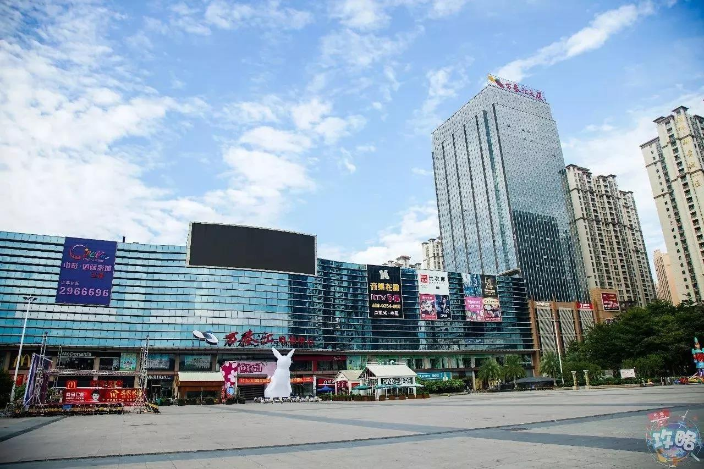

城市概况
-

城市地理位置
普宁市隶属广东省，是广东省辖县级市，在东经115°43′10″～116°21′02″，北纬23°05′40″～23°31′48″之间。位于广东省东南部，潮汕平原西缘；东北接榕城区，与揭东区隔河相望，南邻惠来县，西北连揭西县，东毗汕头市潮阳区和潮南区，西南接陆丰市.
全市面积1620.08平方公里，户籍人口247.27万人，设17个镇、7个街道办事处、1个乡、3个国营农场；有518个村委会、47个社区居民委员会。
-
城市人文风采
普宁境内有3A景点方耀故居德安里，“南方五台山”盘龙阁，佛教岭南禅宗之名迹南岩古寺，梅香飘飘的南方梅园，风景宜人的白水岩游览区等旅游景点.
普宁市拥有许多传统文化，如普宁英歌，嵌瓷，木雕，潮剧，潮汕工夫茶等等。
普宁还有许多具备潮汕特色的美食，如洪阳粿汁，猪肠胀糯米，普宁炸豆干，无米粿，红桃粿等等。
-

城市经济状况
普宁是“中国纺织产业基地市”，纺织服装是主导产业，另一个支柱产业是医药。
在中国纺织服装行业，普宁已成为一个响当当的名字，改革开放以来，普宁利用侨乡和市场优势，发展纺织服装产业，衬衣、内衣、T恤生产企业异军突起，迅速形成强大的产销能力。目前，全市共有纺织服装企业2000多家，从业人员10多万，全市纺织服装产业工业产值150多亿元，具备年产化纤5万吨、针织布100万吨、印染布3亿米、聚丙织带1000吨、服装15亿件的强大产业规模，已形成集短纤、纺纱、织造、印染、后整理、辅料、成衣、设计、生产、销售、出口于一体的系统产业集群，呈现企业集聚、门类集聚、人才集聚、品牌集聚、市场集聚“五大特点”。
普宁种植中药材的历史悠久，据统计，普宁盛产药材达400多种，其中陈皮、乌梅、碎骨补、山药、山枝子、枳壳、青皮、葛根等味正气纯，是当地名优特产。中药材贸易随产而生，普宁中药材市场源远流长，据资料记载，在解放前已是非常鼎盛。民国时期的《汕头日报》便刊登了普宁梅林药市是药材“小国际市场”的信息。
-

城市教育发展
2018年1月8日上午，普宁市教育局党组书记、局长李悦双主持召开党组扩大会议，带领局党组成员、各股室站负责人深入学习党的十九大精神，传达普宁市委十三届三次全会精神。市委第四巡察组副组长陈书扬列席会议。
李悦双围绕当前教育发展不平衡不充分的问题，组织大家深入学习十九大报告有关教育工作内容，学习教育部有关当前教育发展不平衡不充分的论述。他指出，习近平总书记在党的十九大报告中指出“中国特色社会主义进入新时代，我国社会的主要矛盾已经转化为人民日益增长的美好生活需要和不平衡不充分的发展之间的矛盾”,这一战略判断非常符合我国教育实际。
他强调，要解决当前教育发展不平衡不充分的问题，就要以问题为导向，竭力满足人民日益增长的美好教育需要,以教育目标为导向清除发展征程中的障碍，以教育规律为遵循致力于人的健康成长，以实现人的全面发展满足人民对美好教育的向往，以教育优先发展支撑国家现代化未来。